如何通过小程序，一年躺赚x万
来源：https://uijqsqplvs.feishu.cn/docx/L8sxdC6wYorZO1xVgNbc39L4nvf
大家好，我是 一米七大个，今天跟大家分享一下思路，我是如何在一年，利用业余时间，开发了十几款小程序，累计10万+用户，变现5万+的。
跟圈中大佬相比，这点睡后收入还不值一提，但第一块钱的收入很重要，因此在这里跟大家分享下我的一些变现过程。
先来晒一下睡后收入：
支付宝账号1：
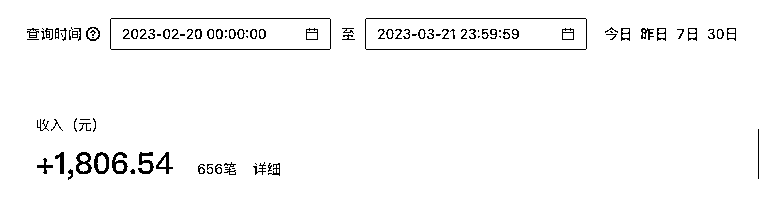
支付宝账号2：
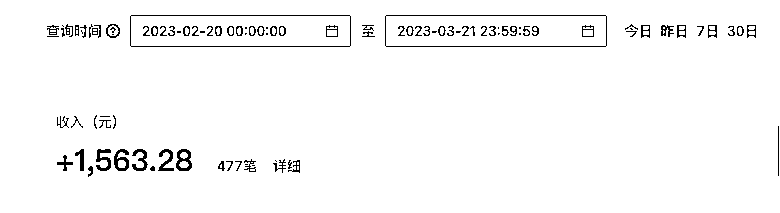
微信账号：
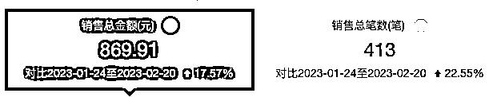
3个账号，睡后收入，在4k/月左右，加个🍗还是够了。
哎？为什么没有百度、qq、快手、字节小程序呢？
因为....你猜（因为做的少，收入不够截图的）
咦？为什么有这么多支付账号？
因为每个支付宝账号只能创建10个小程序，所以需要多个支付宝账号怼量；微信，一个支付账号就够了（但小程序不止1个，不要搞混了）。
好了，接下来从如下几个角度介绍下，如何开始做小程序？
- 为什么是小程序
- 做了哪些小程序，为什么做这些？
- 如何发掘需求
- 小程序生态对比（请重点关注）
- 一些运营上的建议
- 成本如何
- 一些开发建议
- 项目总结以及经验分享
1.为什么是小程序？
1.无需做复杂的SEO
在做小程序前，尝试做过一些独立站。但由于独立站建成以后，发现没有流量。于是找了一些做SEO优化的公司，结论就是：SEO优化太贵，优不起。充值1万起步，大概能用3个月。
网站优化，基本是黑帽和白帽两种。
白帽就是增加一些外链，给你的网站增加一些权重，相应的价格会贵一些，基本是按照每天来收费，比如排入百度非广告第二页多少钱，前10页多少钱等，价格不定。是按照词/天/第几页 收费。
黑帽的特点是：（chatGPT给的答案）：
黑帽SEO是指使用不道德、欺诈或违反搜索引擎规则的技术，以获得更高的排名和流量，但这些技术可能会导致网站受到搜索引擎的惩罚，甚至被完全禁止。
虽然网站没用上，但底层服务还是可以用的，于是考虑到了小程序。
2.微信、支付宝，小程序都能直达，入口流量很大
微信、支付宝，在搜索框中，都可以直接展示小程序入口，依托平台优势，能有一定流量，这些在网站就很难实现。
百度小程序，也可以在百度APP上直达进入，也是一个入口。
2.做了哪些小程序，为什么做这些？
目前为止，做了十几款，基本都是工具类，图片压缩、图片格式转换、图片增大、图片修复、图片转PDF等。
我将这些功能做了一个聚合页，并且进行分类，截图如下：
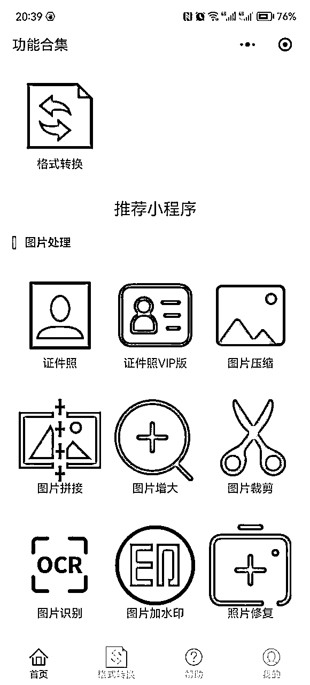
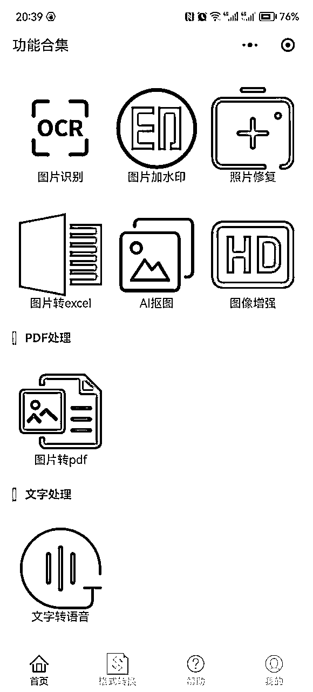
基本每个工具，就是一个关键词。
3.如何发掘需求
微信指数小程序
- 如何进入？直接微信搜一搜： 微信指数 即可。
- 如何使用？输入特定关键词，比如 图片，等待一下，小程序会自动提示相关联的搜索词。
- 点击对应的关键词进去，就能看到具体关键词，以及每天的搜索指数了。
- 另外，还可以对几个关键词添加对比，点击截图的 “添加对比词”即可。
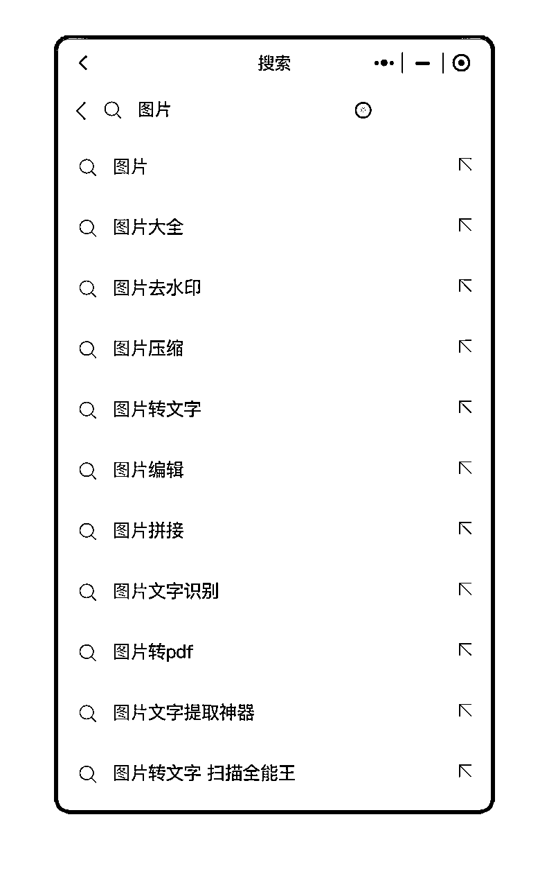
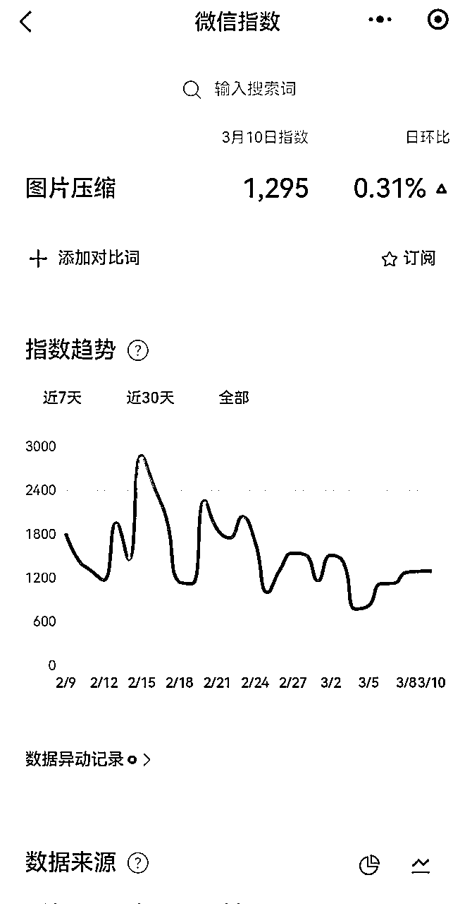
5118关键词检索
- 微信搜索，5118，找到公众号，关注即可。
- 找到菜单栏 快速查询==>商机挖掘，输入关键词，比如图片工具，找到“长尾需求”，挖掘关键词。
- 需要注意的是：指数值是否准确，不重要，重要的是，观察一下指数变化的趋势即可。
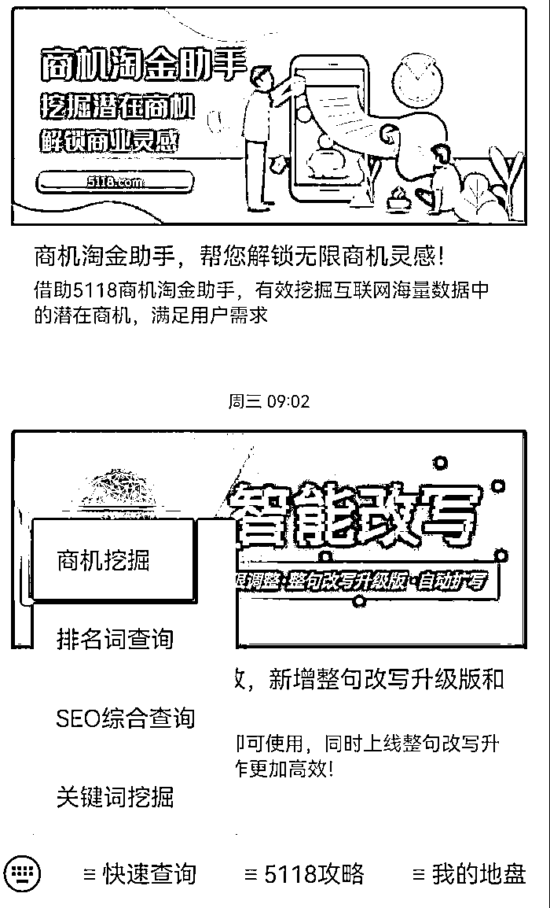
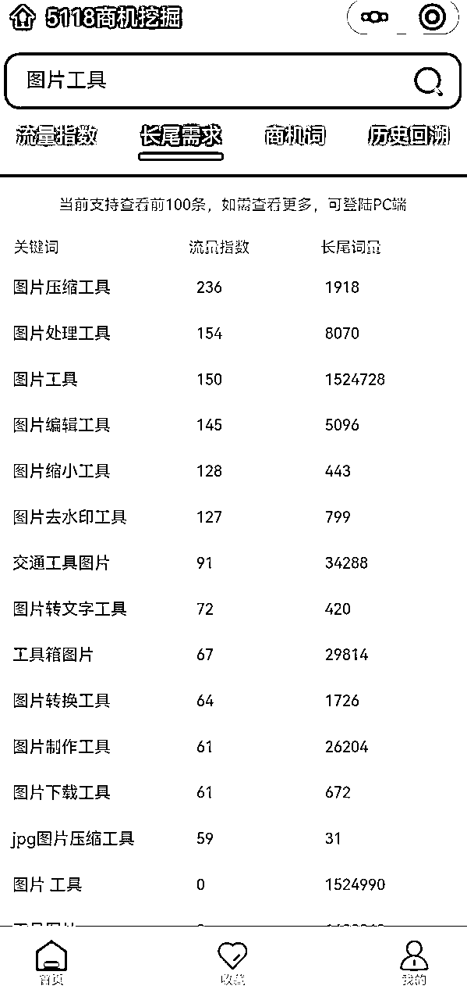
3.不同平台迁移
比如，将微信小程序中很火的功能，迁移到支付宝、百度、QQ，就是机会，而且大概率会成功。
4.寻找搜索词高，小程序少的产品
直接找这种小程序，估计会比较难。我们换一种方式：
假如在平台中，某个小程序的使用量特别大，而此时并没有其他小程序跟进，或者只有很少的小程序跟进的时候，你的机会就来了。因为，此时竞争还很小，用户的需求还旺盛，小程序很容易起量。
4.小程序生态对比（请重点关注）
微信从2017年发布小程序以来，各种平台基本都发布了自己的小程序。比如支付宝、百度、快手、抖音、QQ、京东，等。发布时间不同，也各有各的特点。
下面对各种小程序平台，做一个简单的总结：
1.微信小程序
生态：完善，接口很多，自定义程度高；
客服：较差，一般没有技术支持回复；
审核：审核较宽松，有一次小程序弹窗报错，都能审核通过。
合规：如果有图片处理、文字处理，需要接入内容审核平台，否则可能由于不合规/投诉而下架。
审核时效：很快，除节假日外，最快1小时就能审核通过。
支付：只能对安卓进行虚拟产品支付，IOS不能发起支付，只能走流量变现，重要！！
特点：竞争大，有很多免费小程序（当然大部分需要看视频广告）
变现：直接支付或者流量主（1000用户以上开通）
流量优化几种方式：
- 微信只有免费小程序才能开通，开通后流量会有权重加持。
- 这个目前有些门槛，因为要提交 《计算机软件著作权登记书》，如果涉及线上支付，还需要提供《增值电信业务经营许可证》。
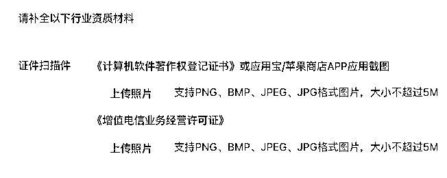
2.支付宝小程序
生态：完善，论坛提问题，会有官方人员回复，不像微信、QQ，跟没人维护一样。
客服：响应很快
- 这里敲黑板：最好使用企业账号联系客服，基本不用排队；
审核：目前审核趋势，越来严格，但只要功能完备，接入内容审查（图片+文本审核），都可以上架。
合规：同微信，需要接入内容审核接口；
审核时效：相比微信慢一些，一般1个工作日左右。
支付：无限制，安卓、ios都可以发起支付。（估计以后会有变化）
特点：竞争小一些，用户付费意愿更强。
- 从数据上看，支付宝的付费比例在8% -15%左右；微信付费比例在4%-6%左右；
- 非官方分析：支付宝给人的印象，就是要花钱的，所以付费比例更高；
变现：直接支付，暂时没看到流量主。
流量优化：提到支付宝的流量优化，有几个点必须要做。
- 关键词设置的个数跟小程序的评级有关系。比如刚上架时，是C级，那么最多只能设置5个关键词。 B级10个，C级15个，S级20个，注意：提交后需要人工审核。
- 小程序的评级越高，给的流量越多，S级还有特别加权。
- 敲黑板：这个很重要，一定要创建一个 “小程序服务”，在搜索关键词时，这个权重很大。
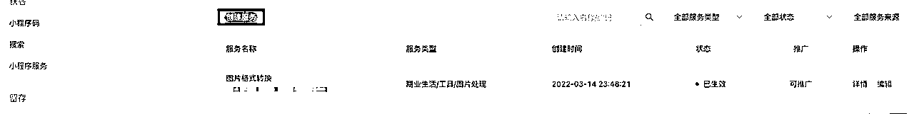
- 认证后可开通搜索直达，有条件的还是申请一下商标。不过需要注意的是，支付宝会检查认证的品类和小程序的类型，不一致，会审核拒绝。（至于商标的品类和小程序所在品类是否相符，解释权在审核人员）
- 认证地址：https://b.alipay.com/page/ipr-brand/auth
- 会根据小程序的表现，发放一定的激励点数，这些激励点数购买流量。
- 链接地址：https://b.alipay.com/page/policyCenter/policyContent?policyCode=你的APPID&policyType=FLOW_POLICY&policyVersion=0
3.百度小程序
生态：相比微信、支付宝差很多，
客服：客服入口比较难找，而且工作时间很短，因此联系客服，比较困难。
审核：百度的审核，是这些小程序里最“事儿”的，遇到过几个问题：
- 百度app的历史版本、不同机型，兼容性不好，出现过几次，自己测试没问题，但是审核就是不通过的情况；
- 审核人员对APP的要求，千奇百怪。有一次，因为首页没有添加小程序的名字，而审核拒绝了。
合规：需要接入文本、图片审核
审核时效：一般1-3个工作日
支付：有坑
- 新开的支付商户号，必需预留2000的退款押金，也就是小程序的收入在2000块以内，是不会给你提现的，官方给的留有是：为了避免退款失败，需要自己预留账户余额，但是设置的时候，这个余额，不能低于2000！这个是我见过的最坑的地方，一个小程序可能一年也没2000块，等于1年内，就全给百度留了。
流量优化
- 百度小程序，还是建立在百度搜索引擎的那套流量理论上的，平时给的奖励，都是小时级收录名额，也可以自己提交页面到百度后台。
- 百度APP可以直接跳转到小程序：百度收录你的页面后，用户的搜索结果，可以百度APP上直接跳转到小程序；
变现：直接支付或者流量主（1000用户以上开通）
4.QQ小程序
生态：最不完善的小程序平台，有多不完善呢？之前的小程序声明，都是让你自己写好，挂到小程序页面的。
客服：没有，不知道如何找客服。
审核：审核一般都能通过，没有遇到审核拒绝。
合规：对接图片审核、文本审核。
审核时效：1-3个工作日，速度一般；
支付：
- 微信支付，需要QQ小程序进行转发。但是商户信息，都需要使用微信支付的。也就是说，QQ支付，就是个套壳，真的只是个壳。
特点：小程序商家有红利期；
- 刚上架的前两周，会给推荐一波流量。具体到什么程度呢？就是前两周的流量，可能是你后面半年的流量。
变现：直接支付或者流量主。
5.快手小程序
快手只上架过一个小程序，这里的特点是：
- 虚拟产品不允许支付，安卓也不行！所以只能走流量，但流量需要有1000个以上用户才可以；
6.字节小程序
抖音也只上架过一个小程序，了解不多：
- 之前上架的小程序，允许安卓支付，不能ios。但后面直接给我下架了，对，没打招呼，直接下架了。
5.一些运营上的建议
- 微信、支付宝、百度，都是企业主体才能开通支付商户号；
- 企业认证，很多需要打款认证；如果有企业网银，就会很方便；
- 可以复用生活号的资质，注册最多50个小程序，免去很大一部分认证费用，每次300。
- 第二个好处是，如果有多个小程序，可以通过union_id确定唯一的一个微信用户；
6.成本如何
这里的成本主要包括几方面：资金成本和时间成本；
1.资金成本
以上几项，一年的成本，不超过5000块。
2.时间成本
- 第一个从零开始的小程序，开发时间成本在20个小时左右。
- 熟练后，在流程差不多的情况下，基本5个小时就能搞定。
7.一些开发建议
1.这么多平台，需要单独开发吗？
当然不需要，使用uniapp开发一次即可，uniapp还有插件市场，插件可以直接导入使用。对了，他还可以直接发布h5。
2.没接触过uniapp，怎么办？
没办法，从零开始，学习。看视频（建议B站），多练习。
3.开发顺序有什么建议吗？
当然，建议使用微信开发调试，之后再简单验证其他平台。为什么？因为好用，试试你就知道了。
8.项目总结以及经验分享
1.工具类项目特点
- 需求稳定：工具类小程序是刚需，基本不会受到疫情影响，需求很稳定；
- 躺赚：小程序基本就是开发的一次性投入，后续基本没有维护工作量，基本做到躺赚。
2.如何才能坚持下去
- 正向循环：赚到第一块钱、获取第一个用户很重要，因为这基本证明了，你的需求是有人愿意付费的，只有愿意付费的需求，才真正是用户的需求；同样，有人付费了，获得激励后，才能继续做下去。
- 先做MVP：小程序开发时，不要追求完美，先上线，有人用再继续优化，没人用，不要浪费太多时间；
- 合规：小程序一定要接入内容审核接口，否则早晚会被下架。